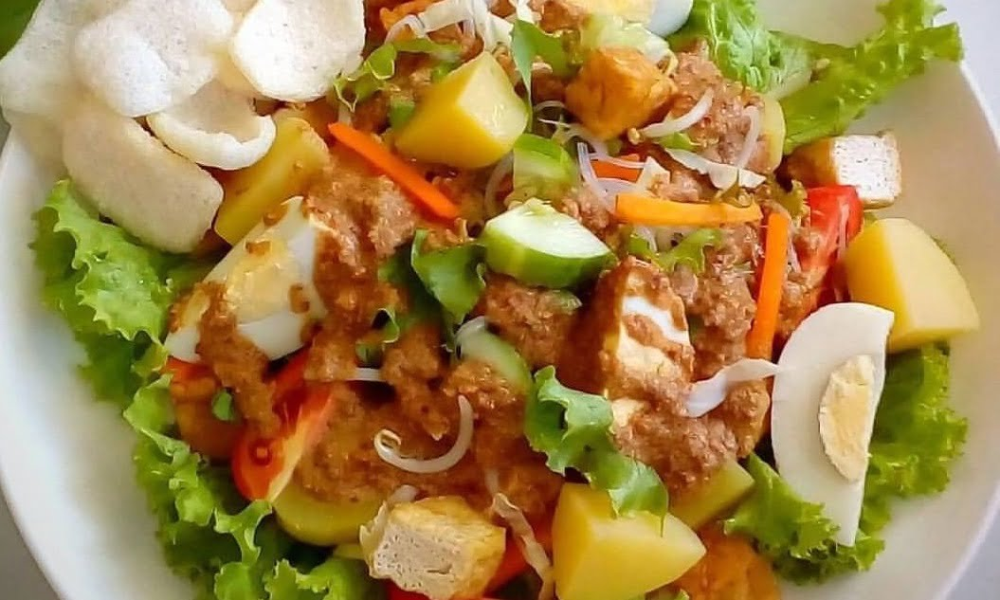

Gado-Gado

Description
Resep gado-gado sudah dikenal sejak lama sebagai salad-nya orang
Indonesia. Kombinasi sayuran segar, kentang, tempe, dan tahu berpadu lezat
dengan bumbu gado-gado yang khas dibuat dari kacang. Ada rasa gurih,
manis, dan untuk penggemar rasa pedas, tentu jangan sampai ketinggalan
ditambah cabai.
Bahan-bahan
Bahan Utama
- 350 g kentang, kukus, kupas, potong-potong
- 350 g tahu putih
- 350 g tempe, potong kotak 3 cm
- 7 lembar daun selada, sobek kecil
- 2 buah ketimun, iris tipis
- 100 g taoge, rebus
- 200 g kol, iris kasar, rebus
- Minyak
Bumbu Kacang
- 200 g kacang tanah kulit, goreng, haluskan
- 3 lembar daun jeruk, buang tulang daunnya<
- 2 sdm Bango Kecap Manis
- 1 sdt garam
- 3 sdt gula merah
- 300 ml santan encer
- 300 ml air
- 1 sdt asam jawa, larutkan dengan 2 sdm air
Cara Memasak
- Aduk rata tempe dan tahu bersama bumbu perendam. Sisihkan
-
Panaskan minyak, goreng tahu dan tempe hingga garing dan matang. Angkat
dan tiriskan. Sisihkan
-
Bumbu kacang: Panaskan 3 sdm minyak, tumis bumbu halus dan daun jeruk
hingga harum. Masukkan kacang tanah dan Bango Kecap Manis, aduk rata.
Tambahkan sisa semua bahan, aduk. Masak hingga matang. Angkat. Biarkan
hingga tidak panas.
-
Tata kentang, tahu, tempe, daun selada, ketimun, taoge, dan kol di atas
piring saji. Tuang bumbu kacang dan taburi bawang merah goreng. Sajikan
dengan pelengkap.